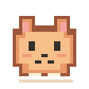

codex petPLUS
작업 메이트 연결하기
평소 쓰는 ChatGPT 계정으로 시작하세요.
별도 프로그램 설치 없이, 크롬 안에서 확인할 수 있어요.
01. ChatGPT 브라우저 연결
공식 ChatGPT 페이지에서 평소처럼 로그인해 주세요. Chrome에 로그인한 계정의 Codex 한도와 웹 작업을 읽습니다. Codex 페이지를 한 탭에 열어 두세요.
연결 확인 중
확인할 수 있는 정보
- Codex 한도의 남은 비율과 초기화 시각
- 실행 중이거나 최근 활동한 웹 프로젝트
- 웹의 최근 작업 최대 50개와 실행·대기·완료·실패 상태
사용량은 Chrome에 로그인한 계정 기준입니다. 웹 목록에는 데스크톱 앱의 로컬 실행 상태가 포함되지 않습니다. 응답에 없는 정보는 추정해서 표시하지 않습니다.
내 정보는 어디에 남나요?
비밀번호·로그인 토큰·쿠키는 저장하지 않습니다. 작업 제목과 사용량은 Chrome 실행 중 메모리에만 유지하고, 브라우저를 재시작하거나 연결을 해제하면 지웁니다. 별도 서버나 분석 도구를 사용하지 않습니다.
연결이 잘 안 될 때
ChatGPT 페이지에서 Codex와 사용량 페이지가 열리는지 확인해 주세요. 로그인 만료나 서버 응답 변경 시 정보를 가져오지 못할 수 있습니다. 새로고침하거나 다시 로그인해 주세요.
독립적으로 개발된 비공식 확장 프로그램입니다. ChatGPT 내부 응답 형식이 변경되면 연결 기능의 업데이트가 필요할 수 있습니다.